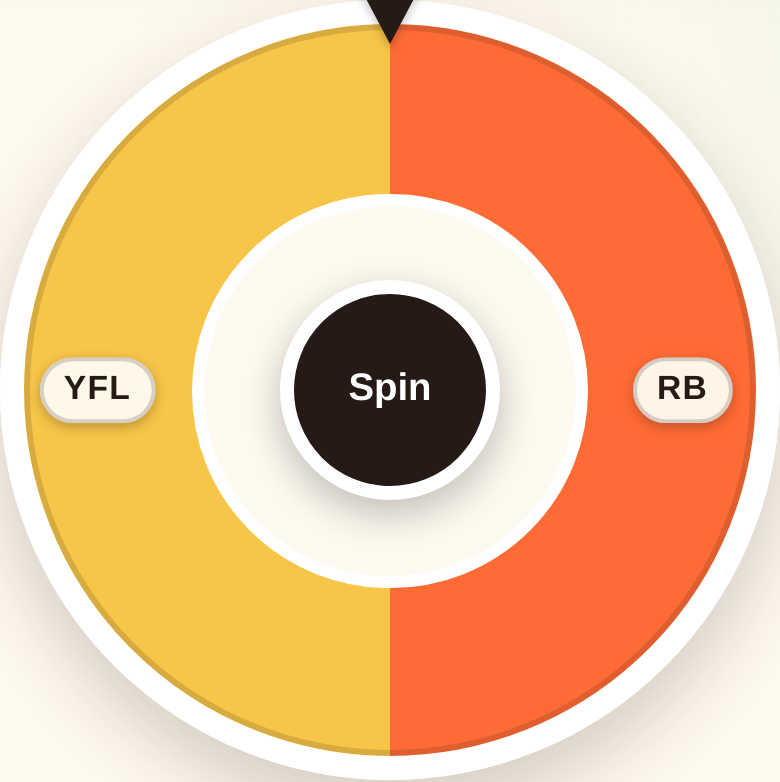

How I Stopped Regexing and Started Using a Typed Decision Model
A side project, a classification problem, and a detour through "just use an LLM"
Sumil Desai · Recipe Roulette
"What should we cook tonight?"
Every night, same question. Hundreds of saved YouTube recipes, zero decisions.
So I built a wheel. 🎡
- Pick a few filters
- Spin
- Cook whatever it lands on (no take-backs)

Recipe Roulette
Filters
Meal typeCuisineMax cooking time VegetarianVeganNo egg SourceText searchThen
An unbiased random pick from whatever is left, plus a link straight to the video.
Catch: Meal type and Cuisine filters only work if every recipe is labeled. YouTube doesn't give you those labels.
All the work happens at build time
# repo map app/ Next.js pages (/ and /stats) components/ wheel UI, stats page lib/roulette.ts filtering + unbiased random pick scripts/ generate-catalog.ts the pipeline classification-taxonomy.ts labels, rules, criteria jev-client.ts the API call ai-classification.ts one request per recipe data/catalog-overrides.json human corrections win
- The browser never calls an API. It just loads a JSON file.
- API keys live only in Actions secrets and the generator script.
- Built with Copilot coding agent and the Copilot app.
Titles are chaos
ZERO-OIL Pressure Cooker Rajma Chawal with HIDDEN VEGETABLES | @yourfoodlab X @fit.khuranaThe Softest GHEE MYSORE PAK Recipe with TIPS | मुँह में घुलने वाला घी मिसरे पाक | Chef Sanjyot Keer- Is that lunch? Dinner? Both? Is Mysore Pak a dessert or a snack? (Ask three aunties, get four answers.)
- Descriptions are full of hashtags, sponsor plugs, and "perfect for any meal!"
- One recipe can legitimately be several meal types, but only one cuisine.
Regex all the way down
Keyword rules per meal type and cuisine, then rules to fix the rules:
- Improve meal type inference
- Refine meal inference classifier
- Filter hashtags and boilerplate
- Tag ambiguous entrees as both lunch and dinner
- Fix drink and soup meal classification
- Expand entree signals
- Fix savory entrees classified as drinks
- Gate drink classification behind a feature flag 🏳️
Favorite bug
A Palak Paneer Casserole was tagged mealTypes: ["drink"].
Why? Its description said "pair it with a refreshing drink."
Every fix made a new edge case. The Drink filter is still behind a flag.
"I'll just use an LLM." The Copilot SDK attempt
const client = new CopilotClient({ gitHubToken, mode: "empty" }); await client.start(); for (/* batches of 20 recipes */) { const session = await client.createSession({ availableTools: [], enableConfigDiscovery: false, enableHostGitOperations: false, enableSessionStore: false, enableSkills: false, infiniteSessions: { enabled: false }, skipEmbeddingRetrieval: true }); const res = await session.sendAndWait({ prompt }, 120_000); JSON.parse(res.data.content) // 🤞 }
The prompt:
"Classify each recipe using only these labels… Use an empty labels array when uncertain. Return only valid JSON with this shape… Include every supplied id exactly once…"
Notice how much of the code is turning things off.
The fix-it PR parade
- #35 SDK now requires a
baseDirectoryfor empty mode. Make a temp dir per run. - #36 Most batches rejected. Add diagnostic logging to see why.
- #37 The model wrapped its JSON in
```jsonfences. 404 of 414 recipes unresolved. Strip fences, beg harder in the prompt. - #38 Still misclassifying savory entrees as drinks, snacks, and desserts.
It worked, eventually. But I was maintaining a prompt, a JSON parser, a validator, a batching strategy, and an agent runtime… to pick from six labels.
A general-purpose LLM was overkill
| What I needed | What a chat/agent LLM gives you |
|---|---|
| Pick from a fixed set of labels | Free text that you hope is JSON |
| A probability I can threshold | A self-reported "confidence": 0.9 it made up |
| Same output shape every time | Code fences, extra keys, missing ids |
| Cheap and fast for ~2,000 items | Batching tradeoffs, 2 minute timeouts |
| A function call | Sessions, tools, skills, config discovery (all disabled) |
I needed a classifier. I was renting a coding agent.
Enter Jev: a typed decision model
- From TypeSafe AI. They call it a System One model: fast, structured decisions for software.
- Reads natural language (and images) like an LLM.
- Does not generate text. Returns typed answers with probabilities.
- Trained for calibration: when it says 0.8, it should be right about 80% of the time (across many predictions).
- No fine-tuning. You shape it with criteria in the request.
Question types
noul yes/no → probability 0 to 1
choice one of N options → pick, confidence, probability per option
score a value on your scale
It can only answer with an option you defined. Hallucinating a format isn't on the menu.
State in, typed answers out
POST https://openrouter.ai/api/alpha/decisions · model typesafe/jev-1.13
// request (trimmed) { "model": "typesafe/jev-1.13", "state": { "title": "ZERO-OIL Pressure Cooker Rajma Chawal…", "description": "…" }, "questions": { "meal_dinner": { "type": "noul", "instructions": "Is the dish commonly served as dinner?", "criteria": { "true": "A main evening meal…", "false": "…" } }, /* meal_breakfast, meal_lunch, … */ "cuisine": { "type": "choice", "instructions": "Which cuisine? Choose unclear…", "criteria": { "Indian": "…", "Italian": "…", "unclear": "…" } } } }
// response (real values, trimmed) { "answers": { "meal_breakfast": { "type": "noul", "noul": 0.06 }, "meal_lunch": { "type": "noul", "noul": 0.83 }, "meal_dinner": { "type": "noul", "noul": 0.87 }, "meal_snack": { "type": "noul", "noul": 0.03 }, "meal_dessert": { "type": "noul", "noul": 0.02 }, "cuisine": { "type": "choice", "choice": "Indian", "confidence": 1.0, "probabilities": { "Indian": 1.0, "Italian": 0, … } } }, "usage": { … } // ~$0.00009 per recipe on average }
Regex said mealTypes: []. Jev said lunch + dinner. No parsing, no prompt begging.
Jev first, regex as the safety net
catalog-overrides.json always wins. Jev only gets asked what's still open.unclear stays null.// classification-taxonomy.ts export const MEAL_TYPE_DESCRIPTIONS = { breakfast: "Typically eaten in the morning…", dinner: "A main evening meal, such as curries…", drink: "A beverage that is drunk, such as tea…", // … } as const satisfies Record<MealType, string>;
- The criteria are typed: add a meal type without a description and it won't compile.
- Why
noulper meal type? A recipe can be lunch and dinner. Cuisine is onechoice. - Why 0.7? A live smoke test showed correct labels landing around 0.72 to 0.84. 0.8 threw most away.
- All probabilities are cached, so the threshold can change without re-calling Jev.
First full run
Today (12 runs, 2,082 recipes)
$0.19 all-time Jev spend. Thanks to caching, a refresh is ~5 calls.
84% of meal types and 90% of cuisines decided by Jev.
Jev overruled regex on 1,084 meal labels and 389 cuisines.
Jev's top confidence per recipe
Every run publishes a report to the site's /stats page: who decided each label, borderline calls, cost, latency.
A few favorites
| Recipe | Regex said | Jev said |
|---|---|---|
| Pressure Cooker Rajma Chawal | no meal type | lunch 0.83 · dinner 0.87 |
| Kadhi Chawal in 15 Minutes | no meal type | lunch 0.78 · dinner 0.82 |
| Ghee Mysore Pak | no meal type, no cuisine | dessert 0.98 · Indian 1.0 |
| Zero Sugar Chocolate Walnut Mithai | no cuisine | dessert 0.98 · snack 0.77 · Indian 1.0 |
| Gujarati Green Moong Dal | dinner | lunch 0.75 · dinner 0.91 |
And when it isn't sure, it says so. 134 recipes are confidently "unclear" for cuisine instead of a guess.
What I'd tell a customer
- Match the model to the shape of the question. Generating text and making a decision are different jobs.
- Typed outputs beat parsing prose. If your code is stripping code fences, something is off.
- Real probabilities make thresholds possible. Your code decides how sure is sure enough, and what happens otherwise.
- Keep a deterministic fallback, a cache, and a scoreboard. The regex didn't die, it got promoted to safety net.
- Copilot made the detours cheap. Trying three approaches took days, not weeks.
Spin it
sumildesai.github.io/recipe-roulette
See how Jev sorted everything at /stats
Questions? Dinner suggestions?